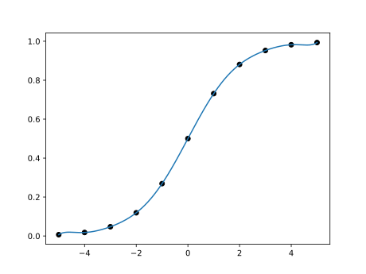

Numerical methods challenge: Day 9
During October (2017) I will write a program per day for some well-known numerical methods in both Python and Julia. It is intended to be an exercise then don't expect the code to be good enough for real use. Also, I should mention that I have almost no experience with Julia, so it probably won't be idiomatic Julia but more Python-like Julia.
Lagrange interpolation
Today we have Lagrange interpolation. This is defined by
with \(x\) the point/points where we want to interpolate.
We will test the method with a sigmoid
Following are the codes.
Python
from __future__ import division from numpy import zeros_like, linspace, exp, prod import matplotlib.pyplot as plt def lagrange(x_int, y_int, x_new): y_new = zeros_like(x_new) for xi, yi in zip(x_int, y_int): y_new += yi*prod([(x_new - xj)/(xi - xj) for xj in x_int if xi!=xj], axis=0) return y_new x_int = linspace(-5, 5, 11) y_int = 1/(1 + exp(-x_int)) x_new = linspace(-5, 5, 1000) y_new = lagrange(x_int, y_int, x_new) plt.plot(x_int, y_int, "ok") plt.plot(x_new, y_new) plt.show()
Julia
using PyPlot function lagrange(x_int, y_int, x_new) y_new = zeros(x_new) for (xi, yi) in zip(x_int, y_int) prod = ones(x_new) for xj in x_int if xi != xj prod = prod.* (x_new - xj)/(xi - xj) end end y_new += yi*prod end return y_new end x_int = linspace(-5, 5, 11) y_int = 1./(1 + exp.(-x_int)) x_new = linspace(-5, 5, 1000) y_new = lagrange(x_int, y_int, x_new) plot(x_int, y_int, "ok") plot(x_new, y_new)
In both cases the result is the following plot.
Comparison Python/Julia
Regarding number of lines we have: 34 in Python and 37 in Julia. The comparison
in execution time is done with %timeit magic command in IPython and
@benchmark in Julia.
For Python:
%timeit lagrange(x_int, y_int, x_new)
with result
1000 loops, best of 3: 1.55 ms per loop
For Julia:
@benchmark newton_opt(rosen, rosen_grad, rosen_hess, [2.0, 1.0])
with result
BenchmarkTools.Trial: memory estimate: 1.97 MiB allocs estimate: 254 -------------- minimum time: 737.665 μs (0.00% GC) median time: 811.633 μs (0.00% GC) mean time: 916.450 μs (10.77% GC) maximum time: 3.119 ms (64.40% GC) -------------- samples: 5433 evals/sample: 1
In this case, we can say that the Python code is roughly 2 times slower than the Julia one, where probably I am not using the best approach for Julia.
Comments
Comments powered by Disqus